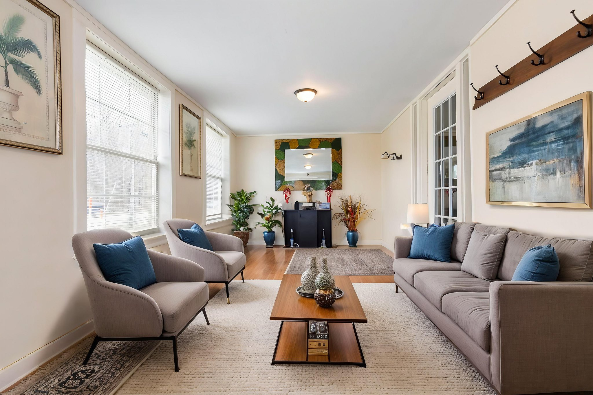
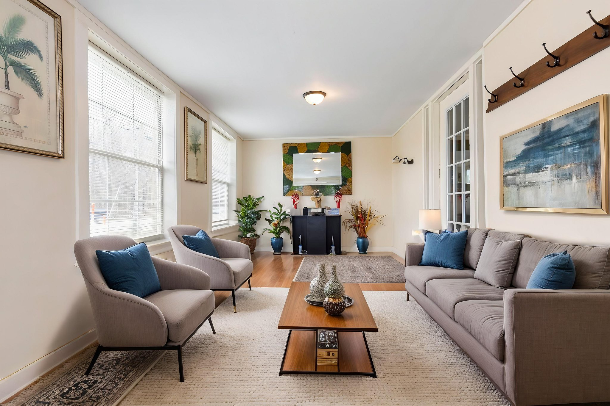

Twilight Photos
Twilight photos capture a property in the soft, dramatic light just after sunset-highlighting warm interior glows, landscape lighting and striking skies. Use the slider to see the before and after!


Welcome! Here’s a breakdown of the services we offer:
Twilight photos capture a property in the soft, dramatic light just after sunset-highlighting warm interior glows, landscape lighting and striking skies. Use the slider to see the before and after!
Transforms empty spaces into beautifully furnished rooms using realistic digital design. It helps buyers visualize the potential of a property. Use the slider to see the before and after!
 

Offer a unique perspective, showcasing the full scope of property, its layout, and surrounding environment.